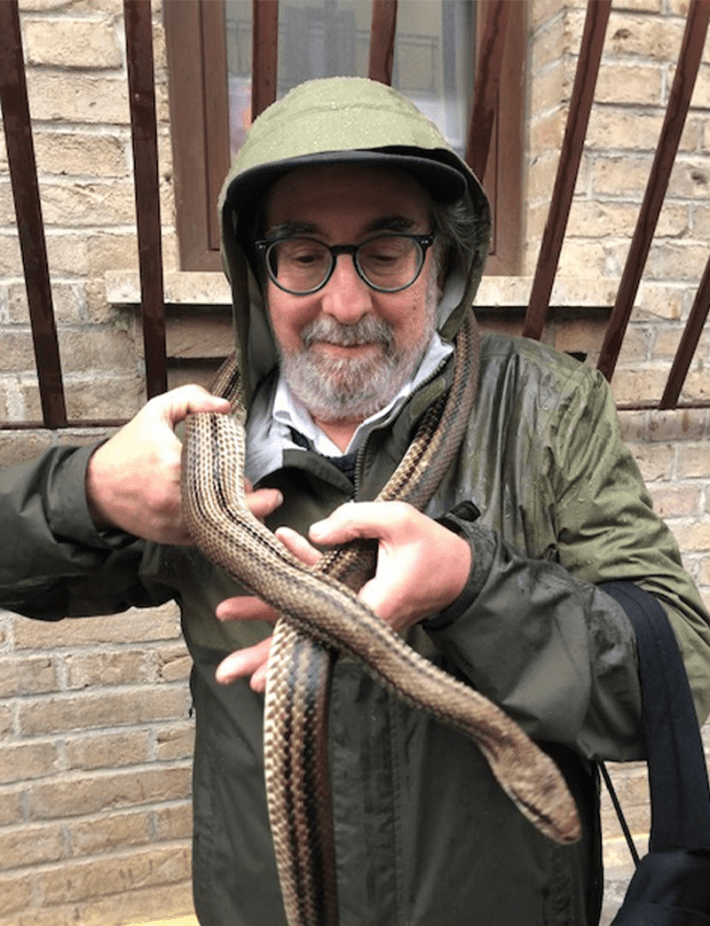

As a child, I was, like many people, mesmerized by the astounding physical metrics of snakes—the longest snake (reticulated python), the heaviest (anaconda), how large a meal they could consume in one gulp (up to 1.6 times their body weight in the case of pythons), the longest fangs, the most lethal venom. These superlatives have been memorialized in archival photos, popular science books (such as Clifford Pope’s 1970s classic The Giant Snakes), and contemporary accounts on the internet, such as reports about the 2022 capture of the biggest invasive Burmese python in the Florida Everglades. But as I embarked on the research for Slither, I began to realize that the scientific study of snakes in the past decade or so has revealed that the most remarkable qualities of these animals have remained invisible to us for centuries.
Many people knew that pythons could ingest prey as large as deer or pigs, for example, but no one knew how they did that. Recent genomic research has shown that pythons activate roughly 2,000 genes within minutes of consuming a meal. They can genetically enlarge organs like the heart, intestine, liver, and kidneys to process these huge meals, then genetically whittle away the extra tissue when they no longer need it. In humans, an enlarged heart is a medical condition known as cardiac hypertrophy, a disease state; in snakes, it is a healthy adaptation that allows the creature to pump blood thickened to the consistency of whipped cream by a sudden gush of fats and triglycerides.
Pythons have also biologically concocted unique molecular pathways that permit this enormous burst of regenerative growth to occur without causing fatal cellular stress or inducing insensitivity to the growth signal insulin, which in humans is a hallmark of type 2 diabetes. And python genomes possess suites of related genes that allow rapid adaptive changes in skull anatomy (allowing snakes to ingest food literally larger than their heads), cold-hardiness, and metabolism. The popular perception of evolution is that it takes place in time scales of thousands or millions of years; in snakes, natural selection can drive changes in as little as a few years. (Of course, scientists have identified other creatures, as well, that seem to evolve over timespans of years not millennia.) In a variety of biological domains—metabolism, sensory perception,sexual anatomy, locomotion, even sociality in rattlesnakes—the ingenious adaptations of snakes remained invisible to us until fairly recently.

SCRAMBLING THE RULEBOOK: Snakes are different, says author Stephen S. Hall, and scientists are just now beginning to uncover some of their most marvelous biological anomalies. Hall is pictured here with a four-lined snake (Elaphe quatuorlineata),common in Europe. The photo was taken at the 2023 "Festa dei Serpari" snake festival in Cocullo, Italy. Photo by Mindy Levine.
Most vertebrate groups follow fairly consistent biological rules. Birds lay eggs. Mammals bear live young. Warm-blooded animals eat frequent meals to keep their metabolic furnaces stoked. Most vertebrates, in other words, abide by the same rules of reproduction, metabolism, perception, movement, even the molecular organization of chromosomes. We all know snakes are different—legless, elongated fuselages, cryptic behavior, the ultimate zoological Other. But I had no idea how many biological rules they appear to break. After hearing about some of their non-canonical biology, I began to think of them as the renegades of chordata.
Reproduction is probably the most obvious example. Scientists have known for a long time that some snakes bear live young, others lay eggs, and still others can clone themselves through parthenogenesis. But molecular research in the last couple years has shown that snakes are agnostic when it comes to the organization of their sex chromosomes. Some have chromosomes that resemble birds; others have chromosomes that resemble mammals. Meiosis, the crucial process of genetic recombination during the creation of sex cells, varies from snake species to snake species. Some imitate the process found in birds and dogs, others resemble that of mammals. Male snakes have two penises (called hemipenes); females can store sperm in their bodies for up to eight years and delay reproduction for nearly a decade.
Every other terrestrial animal slows in a cluttered environment; snakes use obstacles as an accelerant.
Snakes also scramble up the rulebook when it comes to metabolism. Some snakes eat frequent meals; others eat perhaps once a year. Pythons have the lowest metabolic rate of any vertebrates, and their mitochondrial genes—which orchestrate the conversion of food into energy—differ from those of all other vertebrates. As genome scientist Daren Card put it, “There are just no rules anymore,” when it comes to snakes.
Their metabolic and molecular diversity allows snakes to live on land, in trees, in fresh water, in salt water, in jungles, and even in the Arctic Circle—no mean feat given that, unlike birds and mammals, snakes are cold-blooded (or “ectotherms”), forced to rely on the environment to maintain body temperature.
Perhaps most remarkably, virtually every other terrestrial animal slows down while traversing a cluttered, obstacle-strewn environment; snakes use obstacles as an accelerant, moving even more rapidly. Rule-breaking aside, I had to pause to admire the metaphoric implications of using obstacles to move even faster. What a wonderful adaptive response to adversity and challenge!
It’s no secret that snakes are widely loathed and feared—they are often cited in psychological surveys as the most detested of all animals. And fear is not totally misplaced; upward of 138,000 people die of venomous snakebites each year, mostly in Asia and Africa, and former United Nations secretary general Kofi Annan once referred to snakebite as “the most important tropical disease you’ve never heard of.” But I was surprised to learn that the great cultures of antiquity in Egypt, Greece, and Mesoamerica also revered snakes.
Asclepius was said to have learned the secret of bringing the dead back to life from a snake.
A familiar and beautiful example is the Hippocratic Oath, the pledge that physicians take throughout the world when they embark on a career in medicine. Everyone is familiar with one of the oath’s overriding imperatives: “Do no harm.” But few know the very first words of the oath: “I swear by Apollo the physician, and Asclepius …” Who the heck was Asclepius?
I don’t usually consult Homer and Ovid and Pindar in my science writing, but I soon learned that Asclepius was a Greek demigod and physician who inspired a cult of healing around the fifth century B.C. in Greece that spread throughout the Mediterranean. The cult became associated with serpents because Asclepius was said to have learned the secret of bringing the dead back to life from a snake. That is why the universal symbol of medicine, pharmacies, and medical aid societies throughout the world is the snake curling around the staff of Asclepius. To my increasing astonishment, I learned that archaeologists have documented more than 900 brick-and-mortar sanctuaries dedicated to Asclepius in Greece, Asia Minor, North Africa, Rome, and as far north as Germany.
And these were not storefront chapels; the Asclepian sanctuary in Epidaurus, Greece, featured baths, spas, athletic fields, dormitories for the sick, an altar for sacrifices, a nearby Greek theater, and hand-carved votive testimonials, some of which attributed cures to snakes that were believed to be the incarnation of the demigod. So pervasive and fervent were the disciples of Asclepius that scholars later noted that “… the worship of Asclepius, beyond its medical significance, came to play such a role in the religious life of later centuries that in the final stages of paganism, of all the genuinely Greek gods, Asclepius was judged the foremost antagonist of Christ.” Indeed, Christianity took pains to suppress the cult of Asclepius and demonize serpents, in scripture and art, which is one of the reasons humans learned to hate snakes.
An even more timely example is the veneration of serpents by Mesoamerican cultures. Not only was the snake viewed as a messenger between humans and Nature, but serpents were specifically associated with meteorology: rain, lightning, storms, droughts, and the crucial connection of weather to agricultural fertility and hence survival. Implicit in this association was an acknowledgement that Nature could be unpredictable, sometimes benevolent, sometimes malign, often unknowable. In an age (ours) that venerates predictability and certainty, the ancient veneration of snakes offers a surprising cautionary message: As we face the uncertainties of climate change and meteorological volatility, respect for serpents writ large might remain a way of acknowledging all the things we ingenious humans still can’t control. 
Lead image: Kurit afshen / Shutterstock